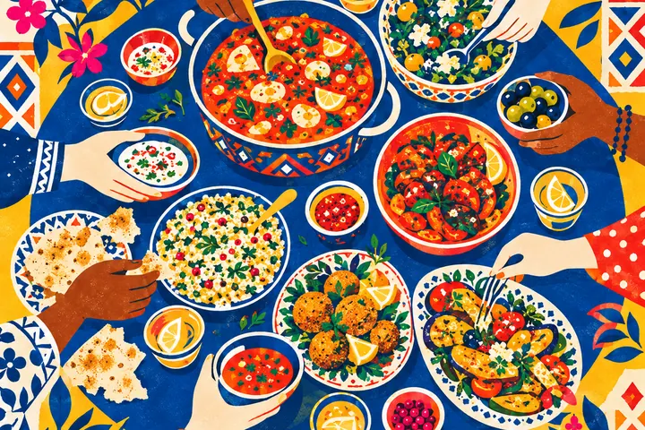
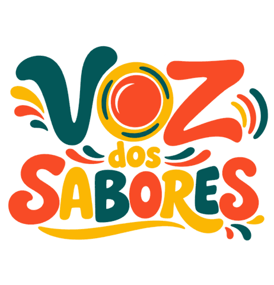
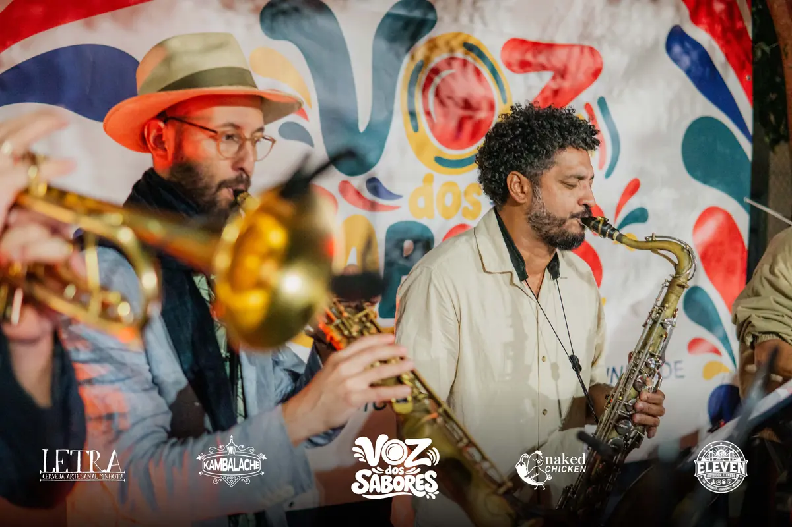
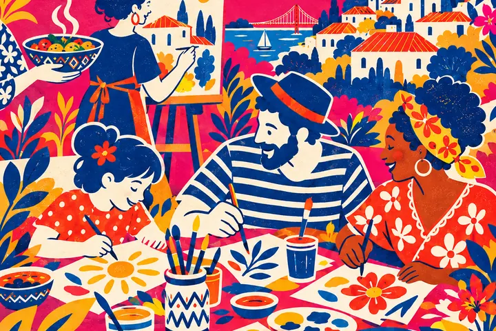
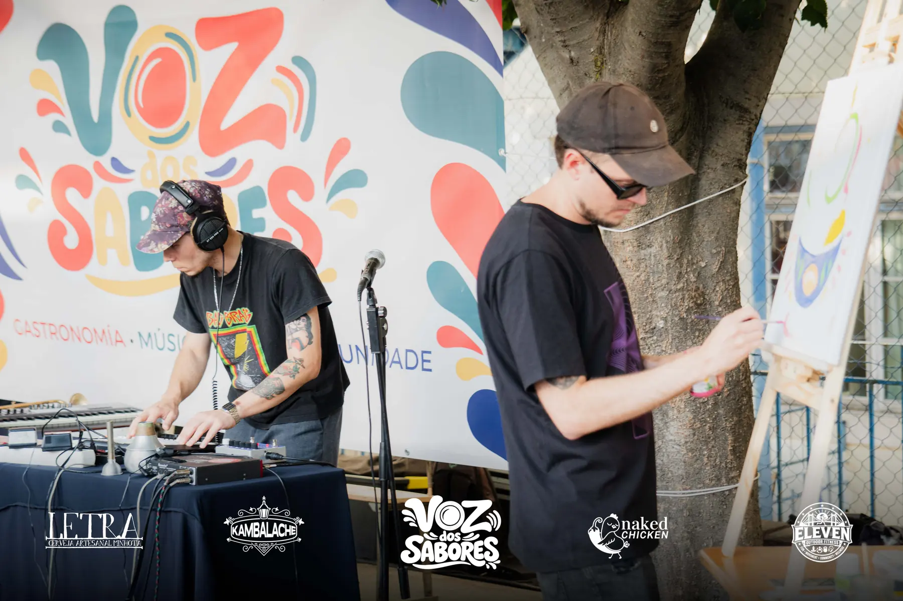

Flavours of the world
Around the same table, recipes, cultures and stories come together. We bring together food projects from different countries and invite you to discover new flavours and meet the people who make them.

Lisbon · First edition: 17 Oct 2026
Food, music, art and community. Thank you to everyone who was part of such a special day. 💛
Flavours from around the world, music that got us dancing and so many wonderful people celebrating with us. Press play and relive a little of that day!
1st edition video · 1:25
Thank you to all the food projects who brought their flavours and stories, to the artists who filled the space with music and creativity, and to everyone who came to eat, dance, discover and celebrate with us.
To our team, our partners and everyone who helped make this first edition possible: thank you for your warmth, your trust and for being part of the Voz dos Sabores community!
The first edition of Voz dos Sabores took place on Saturday, 17 October 2026, at Voz do Operário in Lisbon. It brought together food projects from different countries, live music, DJs, art and workshops for all ages, with free entry.
Food was where we met. Community is what we keep building.

Around the same table, recipes, cultures and stories come together. We bring together food projects from different countries and invite you to discover new flavours and meet the people who make them.

Different rhythms, cultures and generations meet on our stage. Between concerts and DJ sets, we bring together artists well known to Lisbon audiences and emerging talent, making room for new voices, discoveries and plenty of dancing.

Here, creativity is for all ages. Our little art corner invites children, young people and adults to paint, experiment and share ideas. A space to let imagination run free and create together.

We invite painters, graffiti artists and other creators to bring the festival to life with live work to the rhythm of the music. A meeting of sounds, colours and ideas, where the audience can follow the creative process up close.
We're preparing several events for next year, with more flavours, music, art and gatherings. Follow us on Instagram to keep up with dates and news!
Follow the newsThere's always room at the table for one more good idea. Got talent, a project or a wish to bring people together? Let's talk!
Do you make music, dance, paint or something we don't even know we need to discover yet? We want to see your art!
Do you have a food project or a brand with personality? Come and make yourself known, build connections and be part of the experience.
Would you like to see Voz dos Sabores in your parish, association or venue? Let's bring the neighbours together and put cultures around the same table!
Want to support, sponsor or build something with us? We're looking for partners who share our wish to celebrate diversity and build community.
You bring the idea. Together, we give it a voice.
Let's make it happen!Tell us who you are and what you have in mind.
Write to us at vozdossabores@gmail.com
A party made by many hands. Thank you to everyone who believed in the idea and helped make it real.
First edition recognition · 17 October 2026